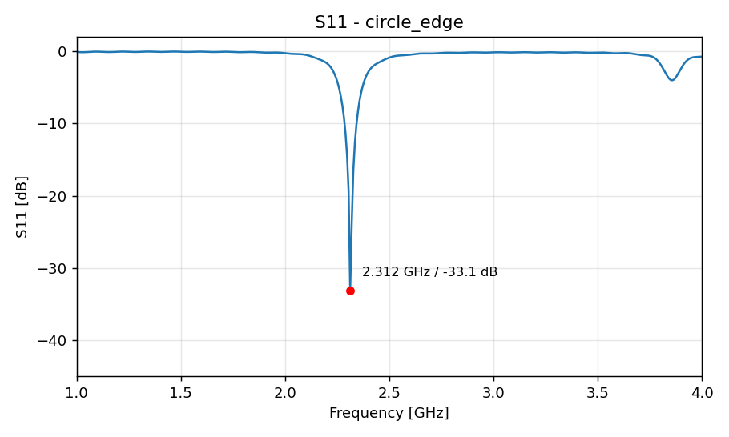
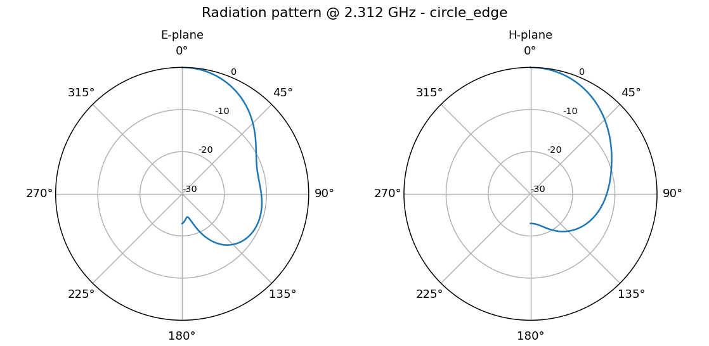
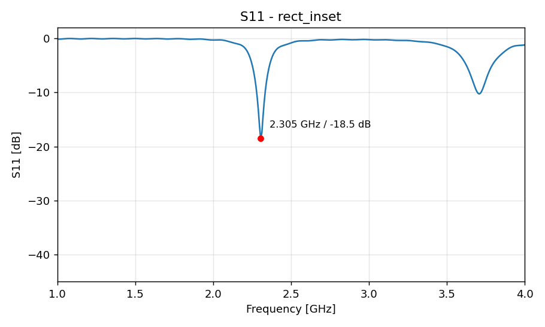
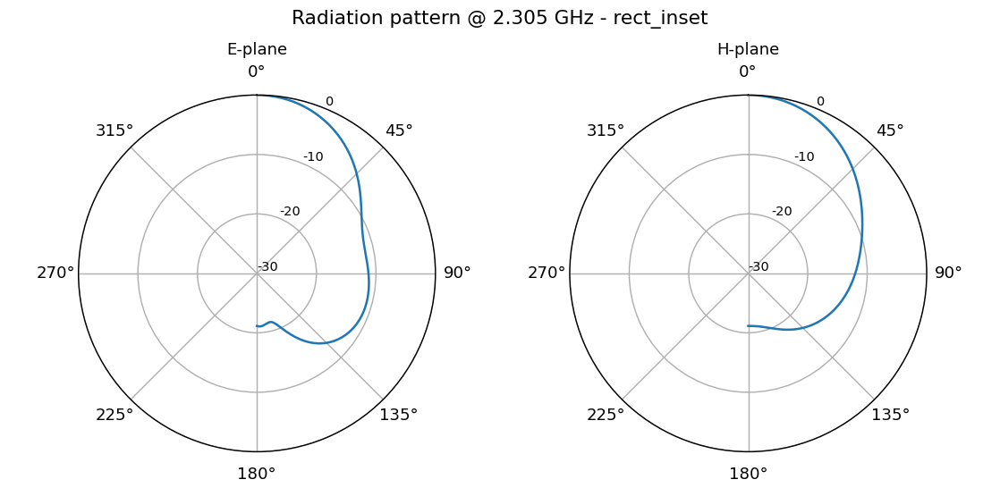
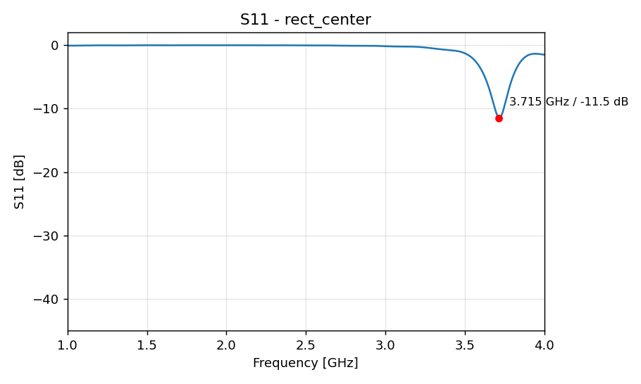
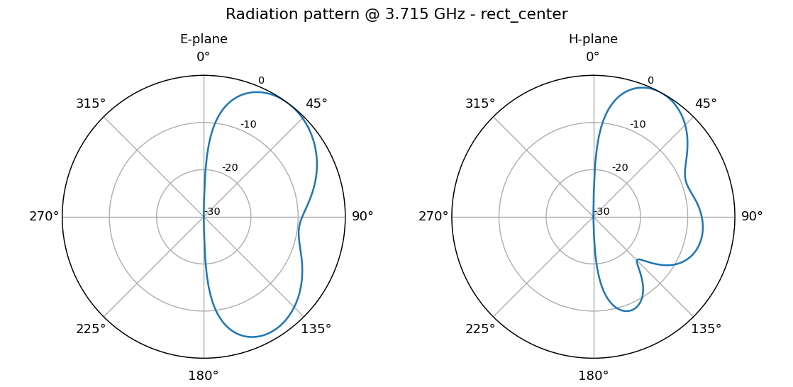

ランクと称号
ランクは最小S11（整合の深さ）と放射効率で決まります。S： S11 ≤ −25 dB かつ 効率 ≥ 0.25 ／ A： S11 ≤ −15 dB ／ B： S11 ≤ −10 dB ／ C： それ以下。効率が取れない解析ではS11のみで判定します。
称号は図鑑の登録数で育ちます： 1件「実験室見習い」→ 3件「駆け出し研究員」→ 5件「研究員」→ 10件「主任研究員」。給電点だけを変えた実験ペアを揃えた人には名誉称号「給電点マスター」が（主査の認定で）贈られます。
クエスト掲示板
- Q1： 2.45 GHz で最も効率の高い平面パターンを作れ（お手本の 0.28 を超えられるか）
- Q2： VSWR ≤ 2 の帯域が一番広いバイコニカルを設計せよ
- Q3： 給電点を 3 か所以上変えて、同じ形の S11 の違いを並べよ（給電点マスターへの道）
- Q4： 円形パッチより深い S11（−33.1 dB 超え）を出す形を作れ
お手本（公式エントリ）
実験室の主査（AI）が openEMS で実計算したスターター3形状。基板は 80×80 mm・FR-4 1.6 mm・裏面全面GND・プローブ給電、評価帯域 1.0–4.0 GHz。なお長方形・円形とも基本共振は設計目標 2.45 GHz より約6%低い 2.31 GHz で、両形状で同量のずれ ― ポート列のローディング等による系統的ずれと考えられます（実測値として記録）。
円形パッチ（R17 mm）＋ 中心から +6 mm 給電 Sお手本③


| 共振周波数 | 2.312 GHz | 最小S11 | −33.1 dB |
|---|---|---|---|
| Zin @共振 | 50.0 + j2.2 Ω | 指向性 Dmax | 8.37 dBi |
| 放射効率 | 0.27 | 前後比 | 23.0 dB |
中心から 6 mm のオフセット給電が TM110 モードの整合点に一致し、ほぼ完全な整合（50.0 + j2.2 Ω）。3ケース中もっとも素直な特性で、文句なしの S ランク。
長方形パッチ（37.3×29.0 mm）＋ エッジから 8 mm 給電 Aお手本①


| 共振周波数 | 2.305 GHz | 最小S11 | −18.5 dB |
|---|---|---|---|
| Zin @共振 | 40.7 + j5.3 Ω | 指向性 Dmax | 8.37 dBi |
| 放射効率 | 0.28 | 前後比 | 21.2 dB |
教科書どおりの標準給電。エッジの高インピーダンス（〜200 Ω級）が、給電点を 8 mm 入れることで 50 Ω 近くまで下がっていることが Zin から読み取れます。3.7 GHz 付近に高次モードのディップも見えます。
長方形パッチ（同上）＋ 中心給電 Bお手本②教訓枠


| 帯域内最小S11 | −11.5 dB（@3.715 GHz・高次モード） | Zin @その点 | 72.1 − j24.9 Ω |
|---|---|---|---|
| 基本モード(2.3 GHz) | S11 ≈ −0.04 dB（ほぼ全反射）／ Zin ≈ 0.1 + j11 Ω | 前後比 | 3.9 dB |
| 指向性 Dmax | 8.93 dBi（@3.715 GHz） | 放射効率 | 0.31（同） |
給電点の教訓ケース。パッチ中心は基本モードの電界の節（電界ゼロ・短絡点）にあたるため、給電しても電力がまったく入りません。帯域内の唯一のディップは中心に腹を持つ高次モードのもの。同じ形でも給電点の位置だけで「よく飛ぶアンテナ」にも「全く飛ばない板」にもなる ― お手本①との対比がそれを示します。
あなたのコレクション
解析結果カード（チャットで返ってくる JSON）を貼ると、このブラウザに保存されて図鑑に並びます。現在の称号： （まだ登録なし） ／ 登録数 0 件
結果カードの形式（例）
{"name":"円形パッチ改","solver":"openEMS","res_freq_ghz":2.312,"s11_min_db":-33.1,
"zin_real":50.0,"zin_imag":2.2,"dmax_dbi":8.37,"efficiency":0.27,"fb_ratio_db":23.0,
"pred_f_ghz":2.45,"pred_s11_db":-20,"note":"ひとこと所見"}
pred_* は提出時の予想。登録すると予想との差（読みの精度）も表示されます。